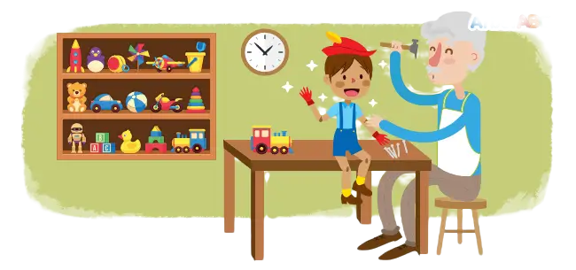

Cuento de Pinocho
Adaptación del libro titulado "las aventuras de pinocho" por Carlo Collodi

Érase una vez un anciano carpintero llamado Gepeto que era muy feliz haciendo juguetes de madera para los niños de su pueblo.
Un día, hizo una marioneta de una madera de pino muy especial y decidió llamarla Pinocho. En la noche, un hada azul llegó al taller del anciano carpintero:
—Buen Gepeto —dijo mientras el anciano dormía—, has hecho a los demás tan felices, que mereces que tu deseo de ser padre se haga realidad. Sonriendo, el hada azul tocó la marioneta con su varita mágica:
—¡Despierta, pequeña marioneta hecha de pino… despierta! ¡El regalo de la vida es tuyo!
Y en un abrir y cerrar de ojos, el hada azul dio vida a Pinocho.
—Pinocho, si eres valiente, sincero y desinteresado, algún día serás un niño de verdad —dijo el hada azul—. Luego se volvió hacia un grillo llamado Pepe Grillo, que vivía en la alacena de Gepeto.
—Pepe Grillo — dijo el hada azul—, debes ayudar a Pinocho. Serás su conciencia y guardián del conocimiento del bien y del mal.
Al día siguiente, Gepeto envió con orgullo a su pequeño niño de madera a la escuela, pero como era tan pobre, tuvo que vender su abrigo para comprar los libros escolares:
—Pinocho, Pepe Grillo te mostrará el camino —dijo Gepeto—. Por favor, no te distraigas y llega a la escuela a tiempo.
Pinocho salió de casa, pero nunca llegó a la escuela. En cambio, decidió ignorar los consejos de Pepe Grillo y vender los libros para comprar un tiquete para el teatro de marionetas. Cuando Pinocho comenzó a bailar con las marionetas, el titiritero sorprendido con las habilidades del niño de madera, le preguntó si quería unirse a su espectáculo de marionetas. Pinocho aceptó alegremente.
Sin embargo, las intenciones del malvado titiritero eran muy diferentes; su plan era hacerse rico con la única marioneta con vida en el mundo. De inmediato, encerró a Pinocho y a Pepe Grillo en una jaula. Fue entonces que Pinocho reconoció su error y comenzó a llorar. El hada azul apareció de la nada.
Aunque el hada azul conocía las razones por las cuales Pinocho se encontraba atrapado, aun así, le preguntó:
—Pinocho, ¿por qué estás en esta jaula?
Pero Pinocho no quiso contarle la verdad, entonces algo extraño sucedió. Su nariz comenzó a crecer más y más. Cuanto más hablaba, más crecía.
—Cada vez que digas una mentira, tu nariz crecerá — dijo el hada azul.
—Por favor, haz que se detenga—dijo Pinocho—, prometo no mentir de nuevo.
Al día siguiente, camino a la escuela, Pinocho conoció a un niño:
—Ven conmigo al País de los Juguetes. ¡En este lugar todos los días son vacaciones! —dijo el niño con emoción—. Hay juguetes y golosinas y lo mejor de todo, ¡no tienes que ir a la escuela!
Olvidando nuevamente los consejos del hada azul y Pepe Grillo, Pinocho salió corriendo con el niño al País de los Juguetes. Al llegar, se divirtió muchísimo jugando y comiendo golosinas.
De pronto, las orejas de Pinocho y los otros niños del País de los Juguetes comenzaron a hacerse muy largas. Por no querer ir a la escuela, ¡se estaban convirtiendo en burros!
Convertidos en burros, Pinocho y los niños llegaron a un circo. El maestro de ceremonias hizo que Pinocho trabajara para el circo sin descanso. Allí, Pinocho se lastimó la pierna mientras hacía trucos. Enojado, el maestro de ceremonias lo tiró al mar junto con Pepe Grillo.
En el agua, el hechizo se rompió y Pinocho volvió a su forma de marioneta, pero una ballena que nadaba cerca abrió su enorme boca y se lo tragó entero. En la oscuridad del estómago de la ballena, Pinocho lloró mientras que Pepe Grillo intentaba consolarlo. Fue en ese momento que vio a Gepeto en su bote:
—Hijo mío, te estaba buscando por tierra y mar cuando la ballena me tragó. ¡Estoy tan contento de haberte encontrado! —dijo Gepeto.
Los dos se abrazaron encantados.
—De ahora en adelante seré bueno y responsable—, prometió Pinocho entre lágrimas.
Aprovechando que la ballena dormía, Gepeto, Pinocho y Pepe Grillo prendieron una fogata dentro de ella y saltaron de su enorme boca cuando el fuego la hizo estornudar. Luego, navegaron hasta llegar a casa. Pero Gepeto cayó enfermo, Pinocho lo alimentó y cuidó con mucho esmero y dedicación.
—Papá, iré a la escuela y trabajaré mucho para llenarte de orgullo— dijo Pinocho.
Cumpliendo su promesa, Pinocho estudió mucho en la escuela. Entonces un día sucedió algo maravilloso. El hada azul apareció y le dijo:
—Pinocho, eres valiente, sincero y tienes un corazón bondadoso y desinteresado, mereces convertirte en un niño de verdad.
Y fue así como el niño de madera se convirtió en un niño de verdad. Gepeto y Pinocho vivieron felices para siempre.